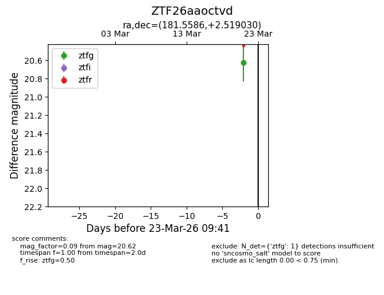
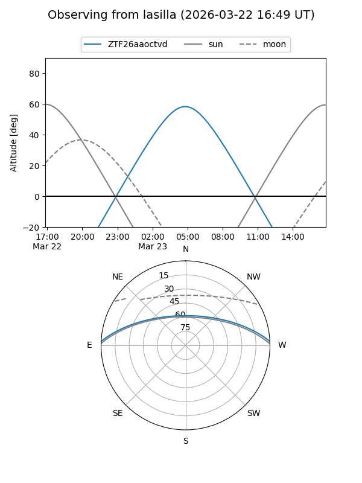
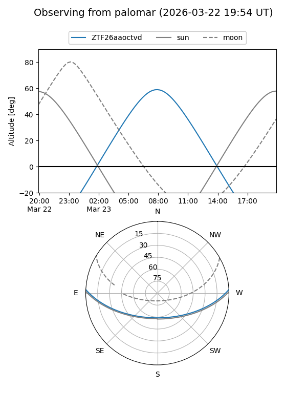

ZTF26aaoctvd
Target ZTF26aaoctvd at 2026-03-23 09:43
Aliases and brokers:
FINK: link
Lasair: link
ALeRCE: link
alt names
ZTF26aaoctvd (ztf,fink_ztf)
Coordinates:
equatorial (ra, dec) = 181.5586,+2.51903
equatorial (HMS+DMS) = 12:06:14.07,+02:31:08.51
galactic (l, b) = (277.2765,+63.11684)
Flags:
Photometry:
last ztfg=20.62
1 ztfg detections
Lightcurve

Visibility


Additional plots